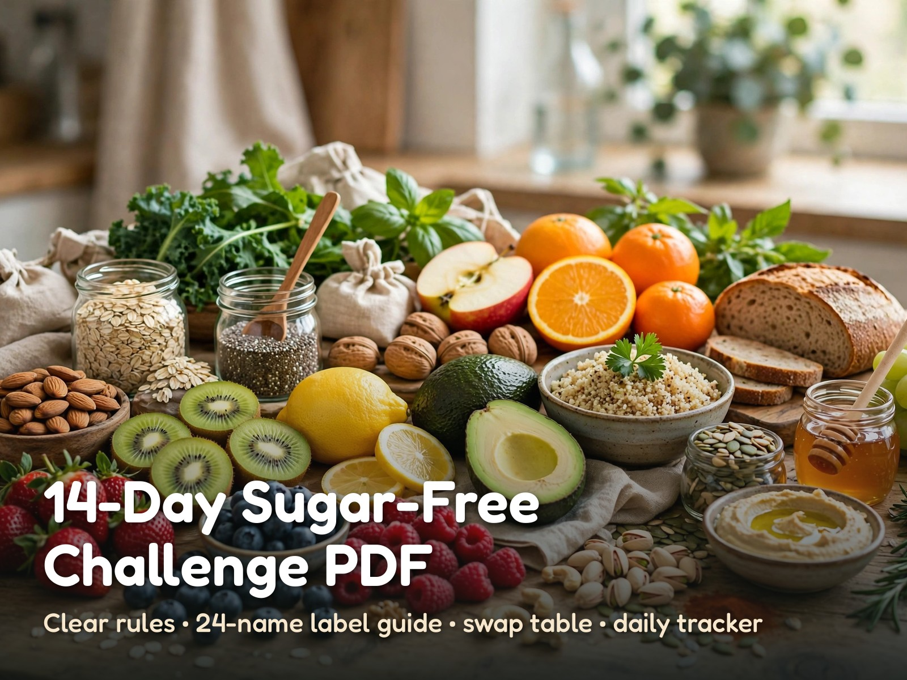

$9 USD — instant download
14-Day Sugar-Free Challenge PDF — Clear Rules, 24-Name Label Guide, Swap Table & Daily Tracker
Get it on GumroadMost people do not fail a sugar break on willpower — they fail on logistics: sugar hiding under names they do not recognise, nothing in the desk drawer at 3 p.m., and no plan for the birthday cake on day 10. This guide fixes the logistics: clear rules, a label guide covering all 24 names sugar hides behind, a swap for everything you will miss, and a day-by-day tracker for the full 14 days.
The rules are unambiguous: what is out (added sugar in all its forms, sweetened drinks, desserts, sweet sauces), what is in (whole fruit, plain dairy, everything savoury), and a 10-second label check for everything in between. The label-reading guide lists all 24 names — HFCS, maltodextrin, agave, fruit juice concentrate, every ‘-ose’ — where each one hides, and how to scan any label in seconds. The swap table gives 12 substitutions that keep the ritual and remove the sugar: soda, sweet tea, flavoured lattes, granola, ketchup, the afternoon chocolate bar and more — print it for the fridge.
Each day of the tracker carries a different focus — drinks only, breakfast rebuild, label detective, eating out, social day, taste test — with a 30-second daily check-in format. The craving playbook gives an exact 15-minute protocol for when a craving hits, plus how to identify and pre-empt your three triggers. Meal ideas cover protein-first breakfasts, assembly lunches and dinners and challenge-proof snacks; restaurant tactics and social scripts handle the outside world; day 7 and day 14 check-ins, a ‘when it goes sideways’ page and a landing plan for after day 14 keep two good weeks from evaporating.
This is a short experiment in eating habits, not a diet prescription. It promises no weight loss and no health outcomes, and it is not medical advice or a treatment for any condition, including diabetes. If you have a medical condition, take medication, are pregnant, or have a history of disordered eating, talk to a healthcare professional before changing how you eat. Within those bounds, fourteen days with clear rules teaches you more about your own habits than a year of vaguely ‘eating less sugar’.
This is a digital download — no physical item will be shipped. For personal use; please do not redistribute or resell the file.